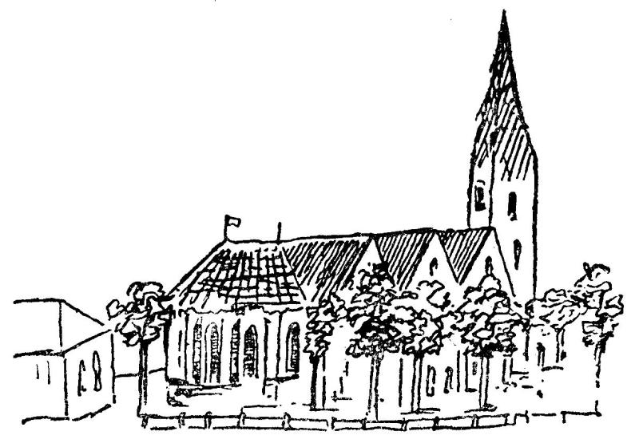

致玛丽亚·恩格斯
巴门
1838年10月9―10日于不来梅
10月9日
第一次发表于《马克思恩格斯全集》1930年国际版第1部分第2卷
原文是德文
亲爱的玛丽亚：
你总算写满了四页纸！我现在要象俗话说的那样，对你赞不绝口。真可惜，骑马的季节已经过去了，所以星期天我多半是呆在家里，不过在家里我也过得挺愉快：有时我请人给我演奏或者唱歌，有时写些东西，到了晚上，我们就胡闹一阵。前天，你知道，是星期日，我们把戒指放在盛满面粉的碗里，然后，就开始做大家熟悉的游戏——用嘴衔住戒指。我们大家都这样做了：牧师太太FN1、姑娘们、画家FN2，还有我。而牧师先生FN3这时坐在屋角的沙发上，抽着雪茄喷云吐雾，观看这场游戏。轮到牧师太太衔戒指时，她怎么也忍不住笑，全身都沾上了面粉；而轮到画家时，他使劲向碗里吹气，以致面粉向四面八方飞扬，象云雾一般落在他那件红绿相间的睡袍上。后来我们又互相往脸上撒面粉。我拿了一个瓶塞，给自己的脸涂上黑色，大家都笑了起来，当我也开始笑的时候，他们笑得更厉害、更响亮；这时我也就嘿、嘿、嘿、嘿、嘿地大笑，所有其他人就跟着嘻、嘻、嘻、嘻、嘻、哈、哈、哈、哈、哈地笑起来，就象童话中犹太人被迫在荆棘丛中跳舞一样。最后，他们以上帝的名义要我不要笑了。
你真是一个傻瓜。既然你讨厌小耶特·特罗斯特，你为什么不让她走呢？
现在傻瓜也开始教训我了，这是令人感动的。请告诉我，傻瓜，难道你不知道“以眼还眼，以牙还牙”这句谚语吗？难道你不懂得如果你还是把字写得小小的，那么我就会写得比你的小一半？好了，这件事就到此为止了。如果你给我写四页，那你也会收到四页，就这样算啦。话又说回来，要是你知道，我这一星期写了多少封信，还有多少封信要写，你就会对我宽宏大量，而且即使收到两页纸，也会感到满足。你不妨问问施特吕克尔，我给他写了多少封信，问问武尔姆，——不，他不在，——还是我来告诉你吧：象这样的纸不少于十二页，而且还用红墨水在纸的两边写了同样多的页数。不过他回信时也给我写了这么多。此外，我还得写信给母亲、海尔曼FN4、奥古斯特FN5、鲁道夫FN6，加起来总共是多少啊？我认为，既然你还能够读到别人的信，那你以后应该公正些，你期望我写的应该是你写的一半。——你以为我把安娜FN7捧上了天，不，根本不是这样，我不会做这样的事。但是，如果她给我写四页，而你只写三页，难道她不比你好？如果撇开这一点不说，那我乐意承认，你是一个好姑娘，你给我写信比任何人都勤快。但是，你毕竟不应该同我胡闹和吵架，以为你全都正确，其实，你倒应该跪在我的面前求我宽恕。——你抱怨给你穿紧身褡，哎呀，小傻瓜，你要是自己挺直点，那就不会让你穿了。——我们这里的天气，正象你信中写的你们那里的天气一样。可是现在这里天气糟透了，细雨和毛毛雨下个不停，要不然就是倾盆大雨，每昼夜才见到一次一线蓝天，半年才见到一次阳光。
你要我写信告诉你，圣诞节我需要些什么吗？我有的东西，你就别给我弄了，而我没有的东西，那又怎么给你写呢？给我做个装雪茄的绣花包吧，或者，唉，我也不知道要什么。可是，你可以经常不断地每隔两三天就提醒妈妈，请她在圣诞节前把歌德的作品寄给我。我确实非常需要它们，因为无论读什么书，总是引证歌德的话。“歌德是什么人？”里佩先生说：“孩子们，这是——！”
你画的鸡舍草图，我一眼就能看出，这是一座很实用的房子：猫和黄鼠狼钻不进去，而家禽也出不来。
上星期五我去剧院看戏，演的是《格拉纳达的夜营》FN8，一出很好的歌剧；今天晚上演《魔笛》FN9，我要去看。我想了解一下这是一出什么剧，想必是个很出色的歌剧。
10月10日。剧院我去过了。我很喜欢《魔笛》。我真希望你也能跟我一起去那里看戏，我打赌，你一定会很喜欢这出戏。——是啊，玛丽亚，我现在还给你写些什么呢？想不出更好的东西，那我和你随便聊几句？说真的，更好的东西一点也想不起来，而你呢，不管写什么，只要写满四页纸，你就满意了。这里不来梅商人的房子造得别具一格：这些房子不象我们的房子那样，宽的一面向街，而是窄的一面向街，屋顶鳞次栉比，前厅宽敞而高大，象小教堂。楼上的窗口对着楼下的窗口，上面盖有活门。一条装在大滑轮上的粗绳可以上下拉动；因为阁楼是储藏室，可以用大滑轮通过小窗把咖啡、麻布、糖、油脂等物送上去。前厅通常有两排窗户，一排在上，一排在下。——现在，领事夫人又带着她的四个小孩到城里去了。他们特别调皮。幸好其中两人，伊丽莎白和路因（实指路德维希）上学去了，所以我们这里还不是整天听到他们的吵闹，可是，只要路因和齐格弗里特在一块，他们就一起又吵又闹，简直叫人受不了。这几天，他们老是在麻布箱上跳，每个人都带枪佩刀，他们互相挑战要决斗，这时路因吹起他的贝壳，震耳欲聋。我这里得天独厚：我的写字台前有一扇面向前厅的大窗户，所以我可以仔细观察那里所发生的一切。
既然你给我画了鸡舍，我现在给你画一个从商行可以一眼望到的教堂。FarewellFN10.

你的哥哥 弗里德里希
脚 注
FN1 玛蒂尔达·特雷维腊努斯。——编者注
FN2 G.W.法伊斯特科恩。——编者注
FN3 格奥尔格·哥特弗里德·特雷维腊努斯。——编者注
FN4 海尔曼·恩格斯。——编者注
FN5 奥古斯特·恩格斯。——编者注
FN6 鲁道夫·恩格斯。——编者注
FN7 安娜·恩格斯。——编者注
FN8 康·克鲁采的歌剧。——编者注
FN9 莫扎特的歌剧。——编者注
FN10 再见。——编者注